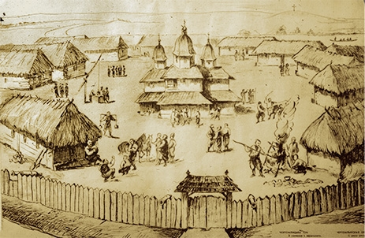

Перші згадки про українських козаків зустрічаються в історичних джерелах 80–90-их років XV (15) ст., йшлося про населення центральної України, яке ходило на різні промисли («в уходи») — полювання, рибальство, видобуток солі, селітри або займалося охоронною службою на кордоні між князівством Литовським і Кримським ханством. Етнічно складалися переважно зі слов'ян. Попри наявність, на ранніх стадіях розвитку, певної частки представників кавказьких груп, яких використовували задля ліпшого проникнення вглиб степу, надалі їх частка була незначна.
Як організована військова сила, яка відіграла роль в історії русько-українських земель, що входили до складу ВКЛ та Польського королівства, а пізніше Речі Посполитої, козаки з'являються у письмових історичних джерелах на самому початку 16 ст. Першим гетьманом запорожців був черкаський та канівський староста — овруцький шляхтич Остафій Дашкевич.
Різноманітні обставини змушували козаків змінювати місце розташування Січі. Їх налічувалося 8 :
.
.